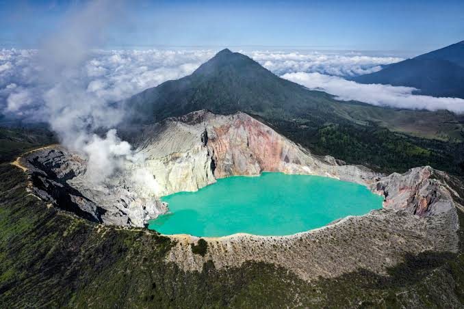
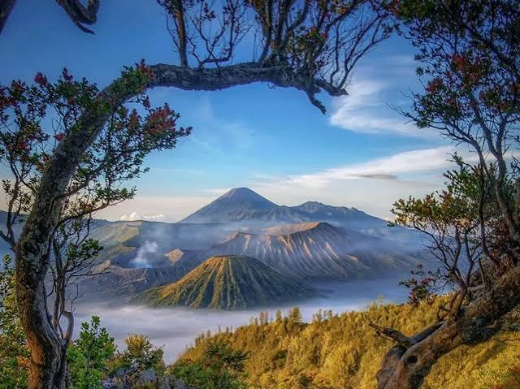
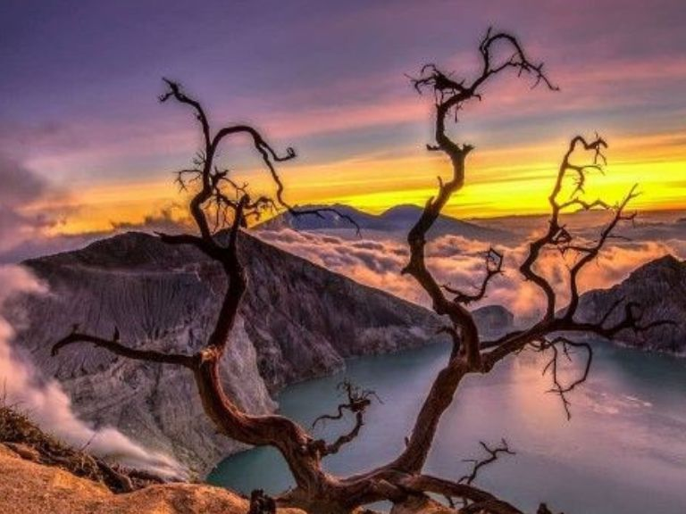
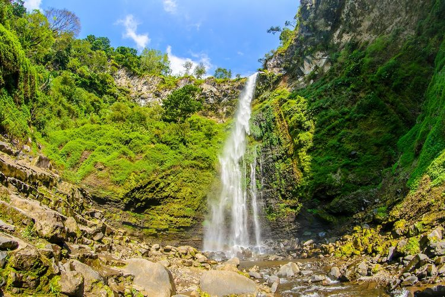

| Beranda | Menu Wisata | Website pariwisata |
Berikut adalah objek wisata menarik di Jawa Timur
|
 Gunung Bromo Gunung Bromo merupakan salah satu tempat wisata terkenal yang berada di Jawa Timur. |
 Kawah Ijen Kawah Ijen merupakan salah satu tempat wisata terkenal yang berada di Jawa Timur. |
 Air Terjun Coban Rondo Air Terjun Coban Rondo merupakan salah satu tempat wisata terkenal yang berada di Jawa Timur. |